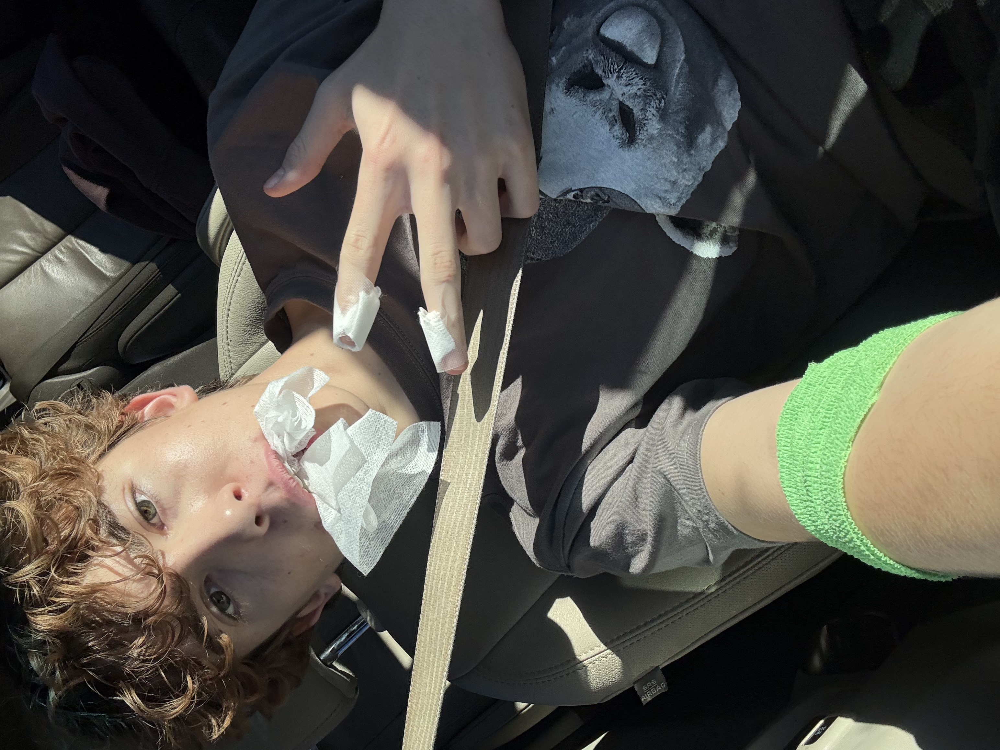
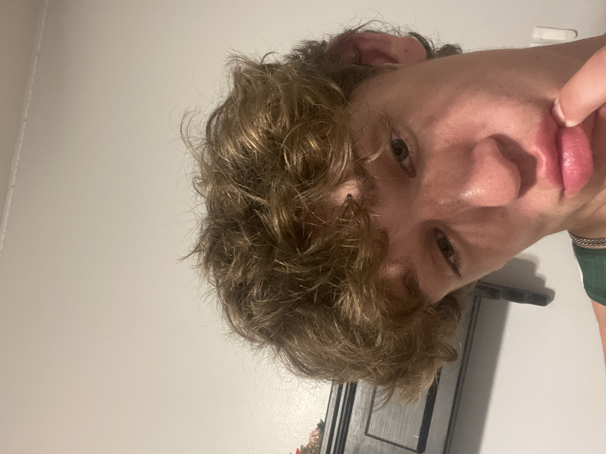
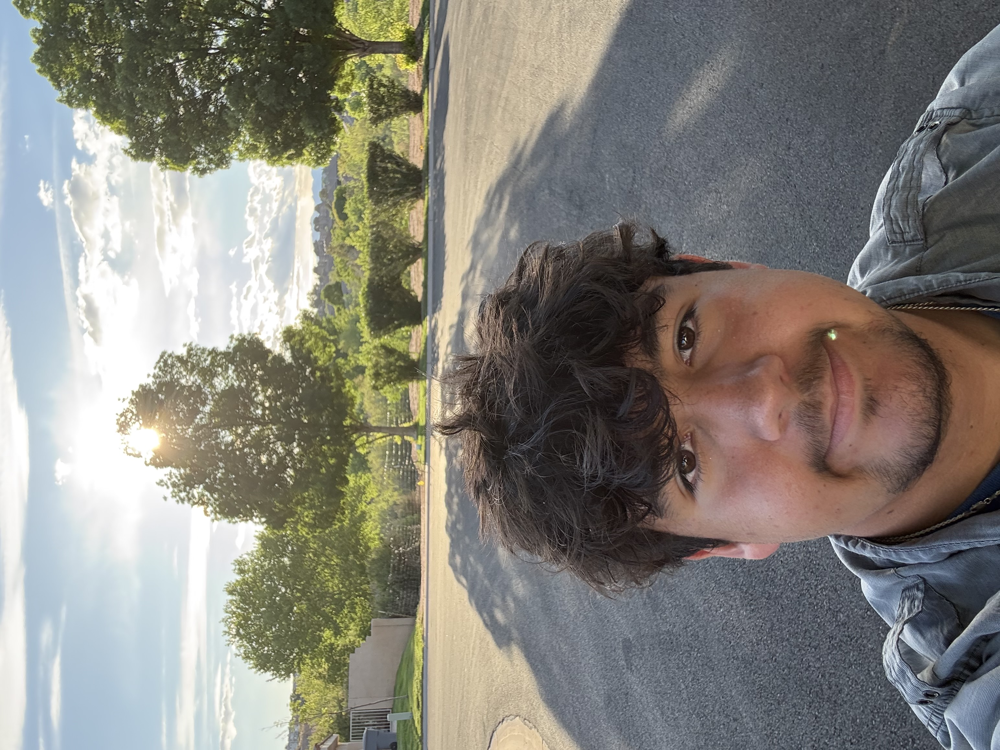

About Us
We are the Tyrannical Turtles, a competitive robotics team from Utah Tech University. Our team is dedicated to designing, building, and programming high-performance robots to compete in the VEX Robotics Competition. We strive for excellence in engineering, teamwork, and sportsmanship, and we are passionate about inspiring the next generation of innovators through our work in robotics.
Team Member Bios

Emerson
Driver, Lead Designer, Builder
Emerson is the driving force behind the robot’s design and performance. As the primary driver, he demonstrates precision and control during competitions while leading design and build improvements.
Ammon
Autonomous Coder, Builder, Drive Team
Ammon specializes in programming autonomous routines, ensuring efficiency and accuracy. He also contributes to building and supports match strategy on the drive team.

Connor
Builder, Drive Team
Connor plays a key role in building and maintaining the robot. As part of the drive team, he helps execute strategies and keeps the robot performing smoothly.

Enoch
Scout, Builder
Enoch analyzes other teams to give a competitive edge through scouting. He also contributes to building and improving the robot’s structure and performance.

Alec
Coder, Notebooker
Alec works on programming and maintains the engineering notebook, documenting ideas, designs, and improvements clearly and effectively.